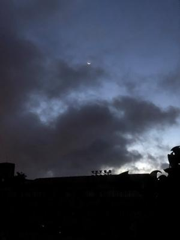

うるがいの話 ある日
最新: リスク管理の話
うるがいとは 前提知識です
カニの画像をクリックすると『うるがいの話』サイトを表示します
うるがい(ｳﾙｶﾞｲ urugai)とは、『もずくがに』の名前でとても大きくなります。
たながー（ﾀﾅｶﾞｰtanagaa）とは手長えびのことで、何種類かあり大きいのは車 エビぐらいになります。
ぶながー(bunagaa)とは、赤い髪の毛、赤い身体、そして身長は１ｍ２０ｃｍ ぐらい、川の蟹を食べているの目撃された。場所は沖縄県国頭郡大宜味村のと ある村僕の隣近所に住んでいる爺さんから、聞いた話です。
2021年08月06日 (金）
リスク管理の話
15:48

重症患者などを除いて、自宅療養を基本とするとした政府の方針について問題
となっている。昨日昼間、テレビのワイドショーをみていると昭和大医学部の
客員教授が『私が前から言っているように、大勢の患者を受け入れる大きな施
設を・・』と言っていた。うむふむ、国はリスク管理が出来ていないというの
だな。会社の情報部門のリスク管理の仕事を担当をしていた。情報機器等が
一箇所に集中しているので、火災等が起きるとコンピュータが燃えてとんでも
ないことになる。そういゆう災害が起きても、仕事ができるように考えるので
ある。そのためにはお金がかかる、役所に要求するのだが、けんもほろろ。会
社の一番偉い人に報告すると『いったいいくらだ、その額では当然ダメだな』
と、ウーン、どうすればいいのだとその都度落ち込む。ところが３．１１で状
況は変わった、役所の反応が変わる。あとは、お金の問題・・・・。お金を見
積りをする上で、前提となる条件を予め会社内で合意していないといけない。
で、一応資料を作って関係者の調整を終え、２番目にエライ人に説明をすると
数分で怒られる！、『沖縄本島全体の災害が起きた場合は、想定しない』に怒
ったのだ、ま、３．１１の後だし、経営者としての責任があるしなと対応を練
り直す。いろいろあったが、計画から１０年かかってそれなりに完成し運用し
ている。２０００年問題（世間ではＹ２Ｋ）を無難に過ごしたあと、当時の課
長と同じようにリスク管理の資料を作成していたとき、『本社ビルが火災にな
ったときは、どうするのか』というと『そんなことは考えてはいけない』と言
われた、でも教科書では考えるべきと書いてあると少し抵抗したが、大人の対
応をとった（のちに、役所の監査機関から重大事案として注意される）。リス
ク管理とは、脅威に対して被害を軽減させることであるが、東電の場合は大津
波に対する脅威に対し想定外としていた。政府の場合は、感染力の強いインド
株に対する脅威に対し、想定外とし国会答弁で『インド株は想定外の感染力だ
から』と大臣が言い訳の答弁している。うーん、東電と似ている、で、誰も責
任をとらないのだろう。つい、政治の話を書いてしまった。明日は空手の話を
しよう。